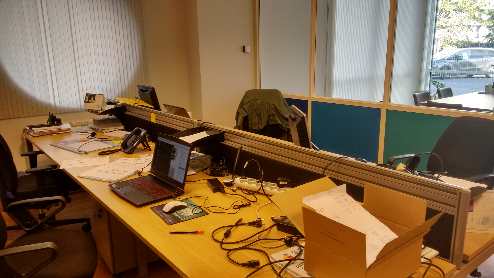

Reportage photo du stage
Le premier jour, le matin, j’ai fait connaissance avec la misère de beaucoup d’automobilistes. Le temps passé dans les embouteillages est du temps perdu.
Le logo de l’entreprise INTRIS, mon lieu de stage, situé Wapenstilstandlaan 47 à Anvers.
La première vue, entrant dans le hall du bâtiment. Au fond l’escalier vers plusieurs étages, l’intérieur moderne et la nouvelle architecture

Au milieu du hall central, un arbre spécial qui croît jusqu’au deuxième étage. Un eye-catcher pour les visiteurs.

La réception au rez de chaussée où les visiteurs doivent se présenter à l’arrivée. Tout le monde doit s'inscrire dans une liste de présences. Une tâche pour la réceptionniste … .
Un bureau au rez de chaussée où on suit les réseaux informatiques. On utilise des logiciels spécifiques pour entretenir les serveurs informatiques. L’ordinateur portable au milieu est le mien. C’était ma place de travail.
La salle de réunion de la firma INTRIS. Ici, des réunions importantes se déroulent.

Pendant le stage, j’ai installé le logiciel VirtualBox j'ai mis en place un réseau d'ordinateurs et de serveurs. Les leçons de l’école en pratique.

Une vue sur le centre nerveux de l'entreprise. La salle des serveurs. Toutes les données sont stockées ici.
Le réfectoire est une petite cuisine avec des boissons, du café et du thé, où on mange à midi. On peut aussi prendre une pause et prendre prendre quelque chose à boire.

Stageverslagen
-
filter_drama Maandag (2017/10/02)
Als eerst kreeg ik een rondleiding in het bedrijf, waaronder we ook de hardware zijn gaan bekijken. Ook hebben we de gebruikte software en het netwerk in het bedrijf overlopen en bekeken. Ik heb samen met de stage begeleider bekeken welke taken en experimentjes met netwerken in VirtualBox ik kon doen zonder het netwerk al te veel te belasten. Voor de rest heb ik verder kunnen werken aan de GIP taken en na kunnen denken over mijn case study.
-
filter_drama Dinsdag (2017/10/03)
De begeleider heeft een probleem met de mailserver opgelost waarbij er een mail niet aankwam bij een klant. Dit probleem werd opgelost door de mail server te benaderen via powershell en via comando's de mail terug te zoeken in de server en door naar de status van die mail te kijken of hij was aangekomen in de server of niet. Daarna heb ik samen met de begeleider een bestand van Microsoft Visio omgezet zodat je het kan gebruiken op Draw.io. Ook heb ik geleerd hoe ik met Microsoft Visio kan werken. Als laatste heb ik ook een Windows server 2012 geïnstalleerd op VirtualBox en ook 2 windows 10 clients om een klein netwerkje te maken.
-
filter_drama Woensdag (2017/10/04)
Ik heb samen met mijn begeleider bepaalde delen van het netwerk in detail benaderd: LAN en LAB. Daarna heb ik de info die ik heb gekregen over deze 2 netwerken verwerkt in de case study. Ook zijn we voor mijn case study gaan checken welk soort glasvezel kabel er is in het netwerk. Daarna heb ik verder mogen werken aan het klein virtuele netwerk met de windows 2012 server en windows 10 clients.
-
filter_drama Donderdag (2017/10/05)
Ik ben de dag begonnen met het afmaken van het kleine netwerkje (1 windows 2012 R2 server met 2 windows 10 clients). Daarna heb ik nog wat vragen over de VMWARE omgeving in het bedrijf gevraagt aan mijn begeleider. En samen met hem de Case Study nagekeken. Ook was er een klein probleempje binnen gekomen met de VPN server, er was gewoon een update nodig. Als laatste heb ik een taak voor school gemaakt waarbij 2 windows XP machines peer-to-peer verbonden moesten worden.
-
filter_drama Vrijdag (2017/10/06)
Als eerst heeft de begeleider server onderhoud gedaan, daarbij heeft hij alle werknemers die deze server gebruikte gewaarschuwd zodat er geen klachten zouden binnen dat de server niet werkt. Na het onderhoud heeft de begeleider een printer verplaatst. Rond de middag belde een klant voor het uitbreiden van zijn back-up schijven. De begeleider hielp telefonisch en monitorde en configureerde de schijven vanaf de pc in het bedrijf. Nadien hebben we nog gesproken over de cloud server van het bedrijf en het schema van die server bekeken.